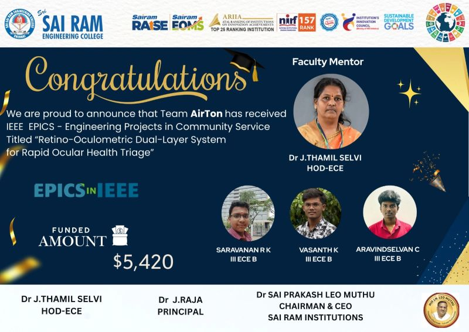
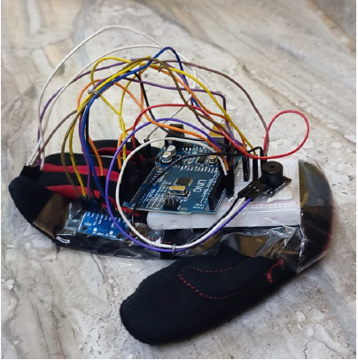
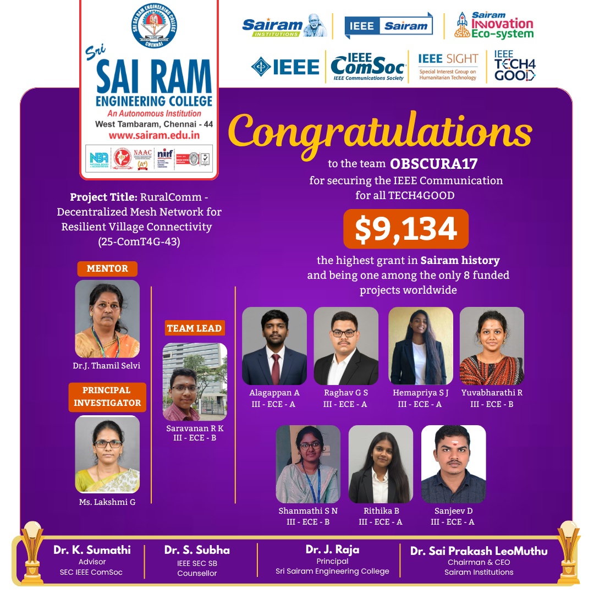
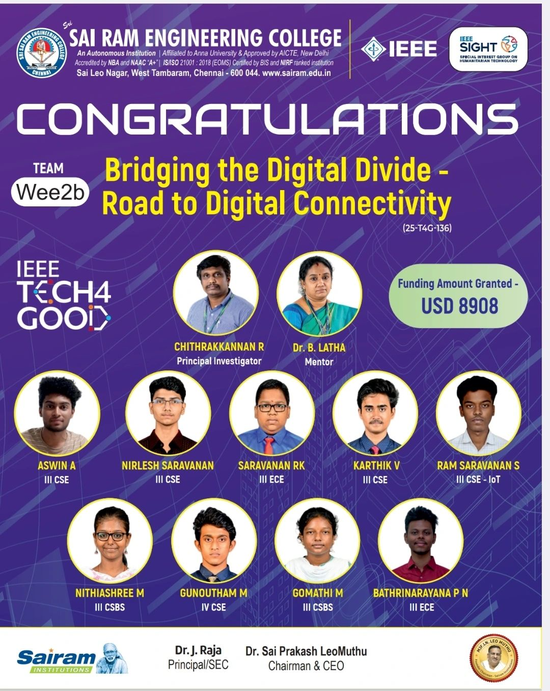
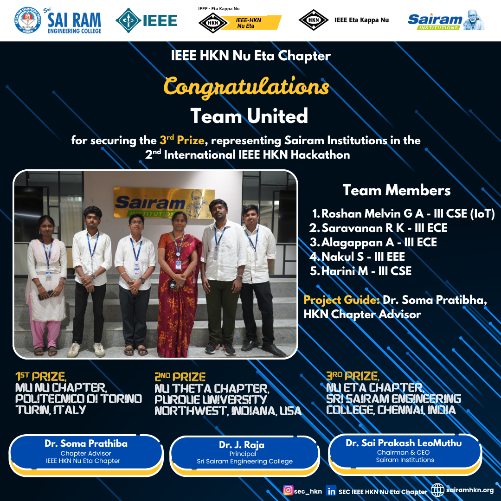

Engineering sophisticated solutions at the intersection of Hardware, AI, and Space.
Technical showcase of systems architecture, hardware prototyping, and agentic intelligence. Designed for rigor, built for scale.
Retino-Oculometric Dual Layer System for Rapid Ocular Health Triage
AI-Powered Continuous Intraocular Pressure Monitoring System
An innovative ophthalmic diagnostic platform designed for early glaucoma detection through continuous intraocular pressure monitoring. The system combines embedded electronics, precision sensing, AI analytics, and remote healthcare connectivity to provide accessible and affordable eye care diagnostics.
Core Features
- 01 Non-Contact Air-Puff Measurement System
- 02 Real-Time IOP Data Acquisition
- 03 AI-Assisted Glaucoma Risk Prediction
- 04 Cloud-Based Health Monitoring
- 05 Portable Embedded Healthcare Device

Achievements & Recognition
CureNet: Intelligent Drug Discovery Platform
CureNet accelerates drug repurposing and pharmaceutical research by orchestrating specialized AI agents that analyze clinical trials, patents, regulatory databases, scientific literature, and market intelligence to identify high-potential therapeutic opportunities.
FSM-CONTROLLED SMART GLOVE FOR SEQUENTIAL MOTION DETECTION AND ANALYSIS
An intelligent wearable sensing platform engineered to capture, analyze, and interpret sequential hand movements using Finite State Machine (FSM) based control architecture. The system integrates embedded sensing technologies, real-time signal acquisition, motion-state classification, and intelligent pattern recognition to accurately monitor complex hand gestures and movement sequences. Designed for advanced human-machine interaction applications, the platform enables reliable motion tracking, gesture interpretation, and behavioral analysis while maintaining low-power operation and high system responsiveness.
The project focuses on transforming raw motion data into meaningful state transitions through a structured FSM framework, allowing efficient detection of sequential actions with improved accuracy and reduced computational overhead. Potential applications include rehabilitation monitoring, assistive technologies, industrial safety systems, gesture-controlled interfaces, and next-generation wearable intelligence platforms.
- 🏆 National Level Finalist – KONE Elevators Innovation Hackathon 2025
- 🏆 Ranked Among Top 10 Teams Nationwide
- ⚡ 30-Hour Intensive Engineering Hackathon
- 📅 Conducted on November 8–9, 2025
- 📜 Published Patent for the Proposed System Architecture

RuralComm: Decentralized Mesh Network for Rural Connectivity
RuralComm is a community-driven communication infrastructure initiative focused on bridging the digital divide in rural and underserved regions through decentralized mesh networking technologies. The project aims to establish resilient, low-cost, and scalable communication ecosystems capable of supporting education, healthcare access, emergency response, digital services, and local economic development where conventional network infrastructure remains limited or unavailable.
Designed with long-term sustainability and social impact in mind, RuralComm leverages community-centric deployment models and innovative networking architectures to empower villages with reliable digital connectivity. By enabling seamless information exchange and access to essential services, the project contributes toward inclusive growth, technological accessibility, and digital empowerment.

Bridging the Digital Divide
Decentralized Mesh Network for Rural and Underserved Communities
A resilient, community-driven networking solution designed to reduce the digital divide in rural regions through scalable mesh-based communication systems. It supports continuous access to essential services including education, healthcare, emergency coordination, and digital inclusion in underserved areas.
- 01 Built on a decentralized mesh network architecture enabling self-healing and adaptive connectivity across distributed nodes.
- 02 Ensures reliable communication in infrastructure-limited regions through low-power and fault-tolerant networking design.
- 03 Designed with scalable deployment strategies to support gradual expansion across rural and remote villages.
- 04 Integrates IoT-enabled community nodes for real-time data exchange, monitoring, and localized service delivery.
- 05 Supports emergency communication layers for alerts, disaster response, and critical information dissemination.
- 06 Enables cost-effective rural deployment using lightweight hardware and minimal maintenance requirements.
- 07 Optimized for energy efficiency and stable performance under varying environmental and network conditions.
- 08 Enhances digital inclusion by enabling access to education, healthcare, and essential government services.

Intelligent Walk-Through Multimodal Bio-Signal Acquisition System
A fully passive, non-invasive walkthrough diagnostic system designed to capture and analyze multimodal biosignals using contactless sensing technologies such as mmWave radar, PPG, infrared thermography, acoustic sensing, and optical reflectance. The system enables real-time physiological assessment without user interaction.
An adaptive sensor fusion engine dynamically weights heterogeneous sensor inputs based on signal confidence and environmental conditions. Edge AI processing enables instant anomaly detection and predictive health mapping through a unified composite metric called the Health Aura Index.
HKN Budget Tracker: Smart Financial Management System
A structured financial tracking and management system designed to improve transparency, control, and automation within IEEE HKN budgeting workflows. The platform enables real-time expense tracking, fund allocation, and structured financial reporting for technical events, student initiatives, and community-driven engineering activities.
Built with a focus on scalability and clarity, the system reduces manual errors, improves decision-making, and ensures audit-ready financial documentation for student-led engineering events and hackathons.
The project was recognized in the IEEE HKN 2nd International Hackathon 2025, where the team was selected among the Top 8 finalists and ultimately secured the position of 2nd Runner-Up, highlighting its impact, design quality, and practical implementation in financial system automation.
